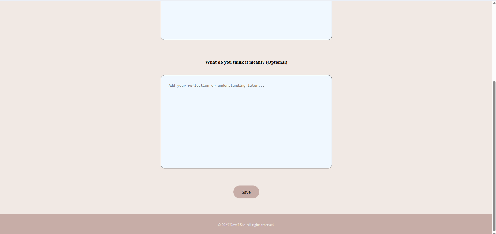

Now I See is a minimalist journaling app designed to help users capture and explore their thoughts. When a thought arises, the app encourages looking deeper into its meaning or origin. By recording these insights, users can organize them, revisit them later, and track their personal growth over time.
cd notes_projectnpm installnpm startserver.js.
Run the following SQL in your PostgreSQL database (e.g., via pgAdmin):
CREATE TABLE users (
id SERIAL PRIMARY KEY,
username VARCHAR(255) NOT NULL UNIQUE,
password VARCHAR(255) NOT NULL
);
CREATE TABLE thoughts (
id SERIAL PRIMARY KEY,
thought TEXT NOT NULL,
response TEXT,
created_at TIMESTAMP DEFAULT CURRENT_TIMESTAMP,
user_id INTEGER REFERENCES users(id)
);
This demo showcases writing journal entries, tagging moods, searching past reflections, and enjoying a calm, focused journaling space.
(The login page)
(The sign up page)
(This a display of the forms that the user can write)
(This is a display of how the notes have been saved)